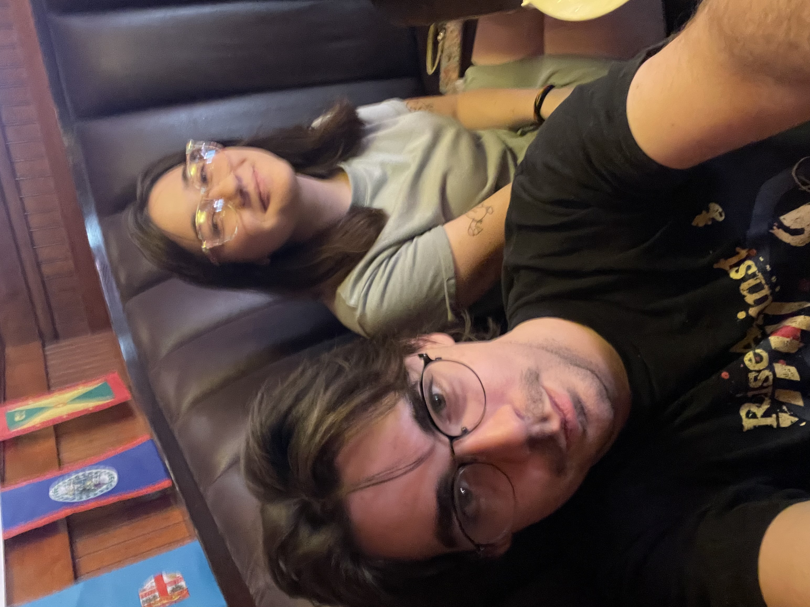

Vincent Vlaisavich is a fourth year cybersecurity student at Northern Kentucky University and a Conner High School graduate. He works extensively with HTML, Python, and JavaScript. In his free time he plays Warhammer, works on his cars, or hangs out with his friends and girlfriend. Professionally Vincent works with Dunkin Donuts at CVG Airport, he is hoping to transfer into a tech job in the future. Former work experience lies majoritively with food management and warehouse work with limited work in warehousing. Vincent loves to participate in the arts, with multiple short stories presented to the Loch Norse open mic and musical works. Fascinated by the macabre and a well formed appreciation for that which lies on the grimdark side, he believes this website is a wonderful representation of who he is arts-wise.
Linkdln Profile
Vincent's favorite band is Social Distortion, a rockabilly punk band based out of Los Angeles California
Vincent drives a 2019 WRX which he lovingly beats the crap out of on backroads. He does this to (yep! You guessed it!) feel something away from the pressures of modern lifeYou will not beat Vincent in a race.
Vincent is technically a man, but he can be girlypop...more than any of you at least.
Vincent's favorite movie is Full Metal Jacket
Vincent's favorite motorsport is rally racing.
One day you will be judged for your sins...may god have mercy on your soul